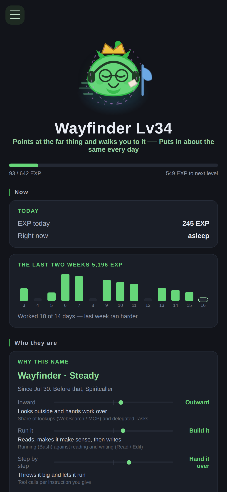
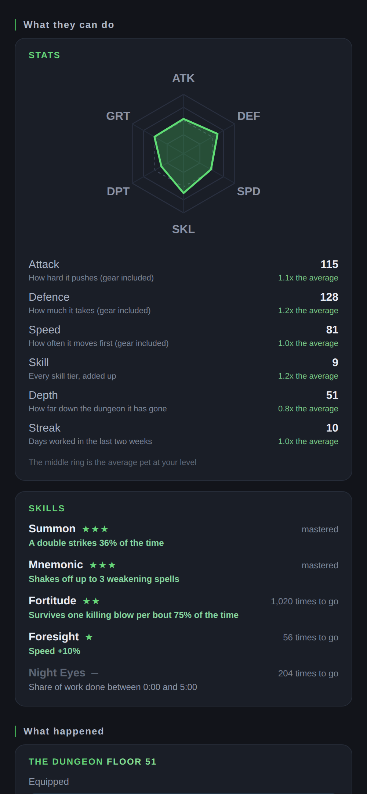
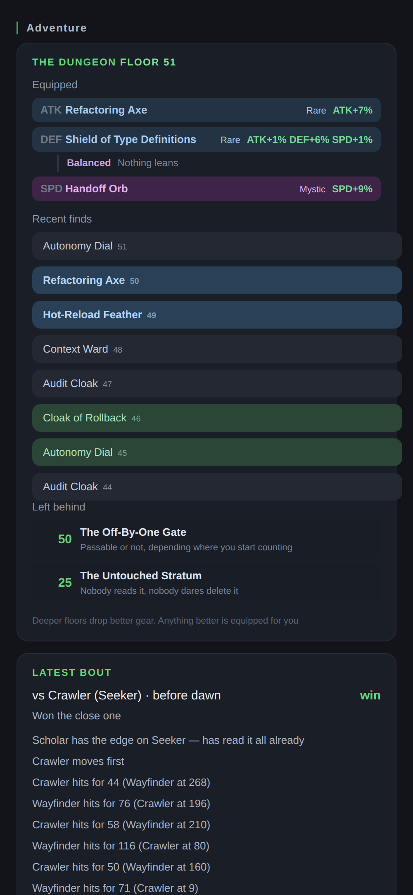
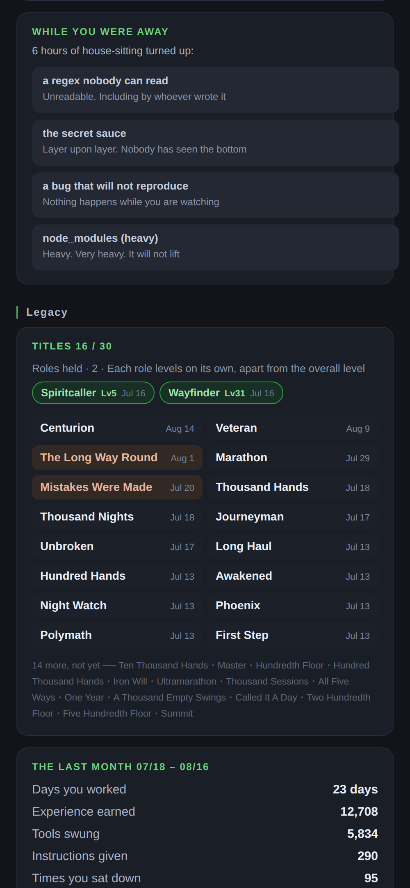

It grows while you work
Maite sits in the corner of your screen and gets stronger from how you actually work. Its level, its stats, the skills it grows, even the name it goes by — all of it comes out of your own logs.
Get Maite — it's freeMIT licensed · No account · No ads · Works offline
Every pet game eventually asks for something. This one doesn't.
Every tool call, prompt and long session feeds it. Level, class, six stats and a skill tree — all derived, never handed out. The same log always produces the same level.
Four axes read how you work — not what you write — and the name follows. Alchemist one fortnight, Puppeteer the next. Change how you work and it changes within a week or two.
A bout every two hours against someone its own size. Nothing to press. You just catch it happening and read what went down.
It delves while you're away and comes back with gear. The best item in each slot equips itself — no loadout screen, because then you'd be farming.
Lose a bout and it turns up with a plaster on its cheek. It heals on its own in an hour. There's no button to help it, and it isn't any weaker meanwhile.
Asleep, it mutters about the floors it reached and the trades it used to hold. The longer you're together, the more it has to dream about.
The phone view is read-only, and it's served by your own machine.




Real screens, not mockups — regenerated straight from the app.
One line per event, on your own machine. This is the whole record.
{"t":1786659596374,"e":"PostToolUse",
"s":"63528a31","p":"fa748169",
"tool":"Bash","ok":true}
s and p are the first 8 characters of a SHA-1 of the
session id and the working directory. All it needs is "same or different", so the
plaintext is never kept.
Never recorded, not once:
Configure nothing and it never touches the network. Turn on sync and that one line goes to your own Cloudflare account — you deploy the server yourself, and the content was never in the line to begin with.
That's genuinely it.
One command. It appends a line per event and exits — it never blocks Claude Code, and never waits on the network.
A small window in the corner. It naps, stretches, and a cat wanders past when your hands are still.
Come back after a few hours and it tells you what it got up to. That's the whole loop.
You're buying reach. Never experience points.
Claude Code already keeps a transcript of every session you've ever had. Maite can fold those in, so you start from the level you actually earned rather than zero.
A key widens the window the importer may look back through — nothing else. The growth rules are identical for everyone, and the same log always produces the same level.
So a key is worth exactly as much work as you actually did. Took the month off? A key gets you zero.
They may as well be raising something. Free, MIT licensed, and it works on Windows, macOS and Linux.
Get Maite on GitHub